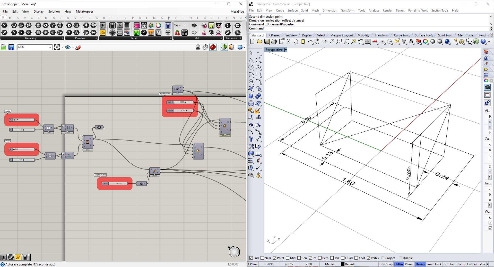
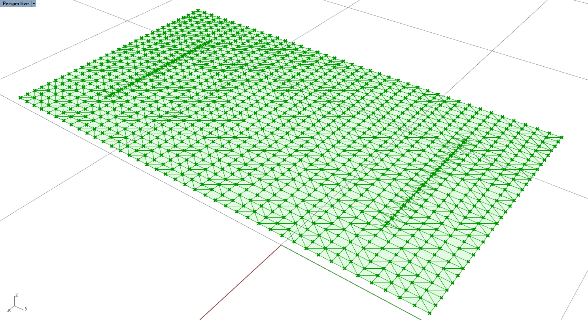
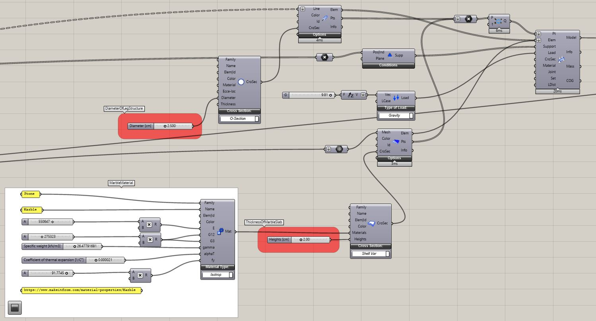
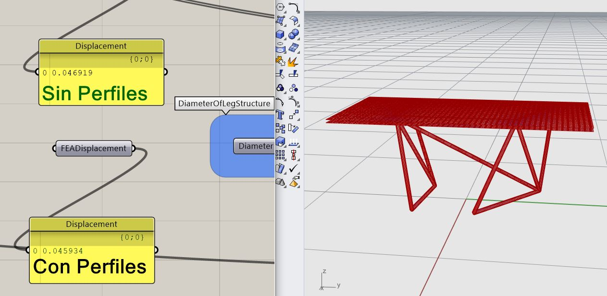
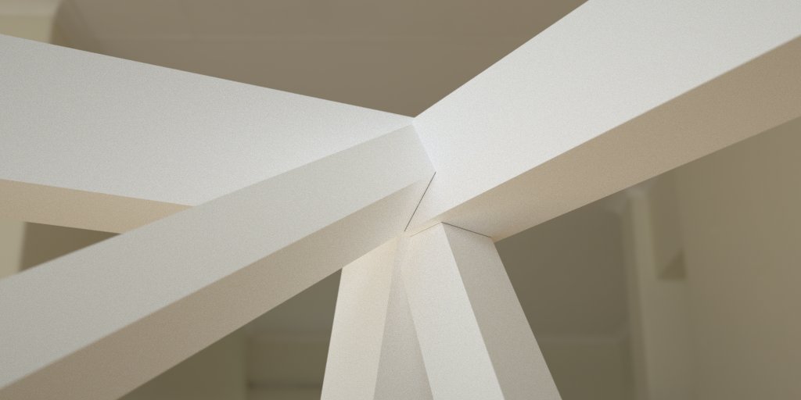
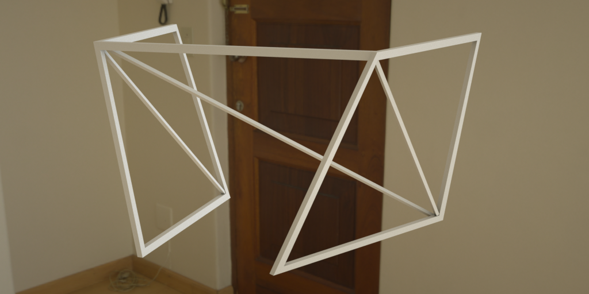

Felipe Gutiérrez
Programmer/Creative
El proceso de diseño comienza con un concepto de ligereza, de equilibrio. La primera aproximación al problema (transladar el peso de una lámina de mármol al suelo), nace de dos
primitivos, el rectángulo y su subdivisión más resistente, el triángulo. Sostener la lámina con dos rectángulos subdivididos o serchas en los extremos, permite tener un sistema
resistente con la menor cantidad de elementos. Sí optimizamos la cantidad de material de acuerdo a las fuerzas (tensión o compresión), se necesita mayor material donde el sistema
presenta compresión y menor cantidad de material donde hay tensión, esto nos permite tener una estructura más ligera. En teoría, las diferentes fuerzas necesitan diferentes tipos
de material para reducir la sección de las piezas, no obstante, por motivos estéticos, se utilizará el mismo material para los elementos que están a tensión como a compresión.
Boceto original:

Sabiendo como se va a ver el concepto, se utilizará Grasshopper/Rhinoceros3d para crear el modelo,
tomando como punto de pártida las dimensiones de la lámina de mármol, así como el alto que va a tener la mesa y la distancia que va a haber entre la lámina y la estructura.
Definición del rectángulo paramétrico:

Definición de la geometría 3D:

Con estos valores iniciales se tiene suficiente información para crear un modelo paramétrico en el que las posiciones de la estructura puedan modificarse. Esto permitirá crear
diseños diferentes de acuerdo a una lógica de optimización estructural.
Modelo paramétrico:
Una vez creado el algoritmo que permite modificar los elementos, se crea un FEM (Finite Element Model) o Modelo de Elementos Finitos para poder correr una simulación estructural, FEA
(Finite Element Analysis), o Análisis de Elementos Finitos. Los elementos finitos son: beams (vigas) que se modelan como líneas y shells (conchas) que se modelan como meshes/mallas.
Cuando se esté modelonda el FEM es importante que todos los elementos coincidan, es decir; sí se tiene una viga (beam) soportando una placa (shell), es fundamental que los puntos que
componen cada uno de estos elementos coincidan.
A continuación, se puede ver el mesh cuyos vértices coinciden con los vértices de la línea:

El procedimiento para cumplir este requerimiento es el siguiente:
Crear una superficie a partir del rectángulo original que va a simular nuestra lámina de mármol, dividir la superficie en puntos,
ya que la lámina queda en contácto con vigas, adicionar los puntos que componen las vigas (en este caso se decidió subdividir la línea original en más puntos para tener mayor
exactitud en el análisis estructural) a los puntos de la subdivisión de la superficie y construir una malla/mesh a partir de estos (a través de una triangulación de Delaunay) utilizando
el componente Delaunay Mesh de Grasshopper.
Concha cuyos vértices coinciden con los de la viga:

Para la simulación estructural se va a utilizar la versión gratuita del plugin Karamba3D (escrito por Clemens Preisinger en cooperación con Bollinger und Grohmann ZTGmbH) de
Grasshopper. El análisis necesita de puntos, elementos, soportes, cargas y sección.
El material, en este caso es mármol.
Propiedades del mármol:

Lo siguiente es definir las secciones tanto para las vigas (patas) como para las conchas (placas), los soportes (vamos a utilizar los puntos de apoyo con el suelo) y las cargas (en este caso
solamente la fuerza gravedad). Hay que tener cuidado con que no haya puntos repetidos para el análisis. En caso de que hayan se deben remover con el componente removeDuplicatePts de Karamba3D.
Montaje del FEA:

Una vez corrida la simulación, se puede generar una visualización.
Visualización del FEA:

Seguidamente, para optimizar la estructura, se utilizará el output Displacement (el desplazamiento que tendrán los elementos bajo las cargas definidas) del componente Analyze de Karamba3D, como
función de coste (Fitness function).
A continuación minimizamos el desplazamiento mediante el componente Galapagos a través de Simulated Annealing, en español Recocido Simulado.
Optimizando mínimo desplazamiento:
Hay otras optimizaciones que podrían implementarse para tener menos desplazamientos, pero gracias al concepto de diseño de ligereza este fue el diseño seleccionado.
La primera imagen a continuación es un ejemplo ya que es estructuralmente mejor que la segunda, debido a que tiene menos desplazamientos.


Después de haber diseñado a través de la optimización estructural, se crean diferentes secciones para los elementos que funcionan a tracción (más delgados) que para los elementos que están a
compresión. Se queman/bake los breps (Boundary Rep-resentation) a Rhino desde Grasshopper y se realizan operaciones "Split" entre las "patas" para obtener elementos que puedan ser cortados
y soldados.
Detalle constructivo:

Finalmente se realizan pruebas de materiales mediante renders, con lo que se busca determinar el material de escogencia.
Renders diferentes materiales:

Bronce

Metal negro

Metal oxidado
Otras imágenes renderizadas:
 Metal negro
Metal negro
 Clay render
Clay render

Clay render